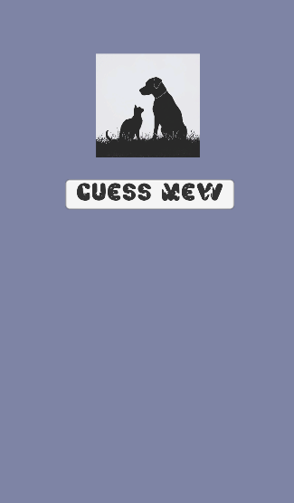
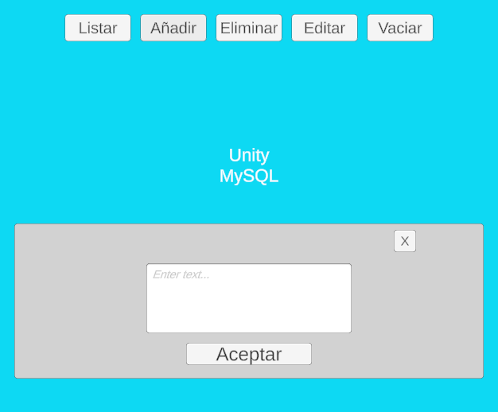
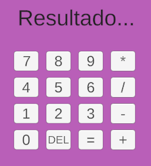
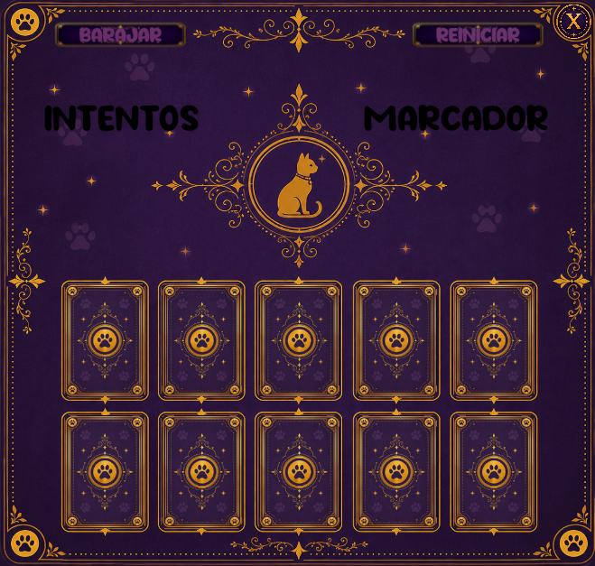

CT Cristina Tornero

Videojuego 2D inspirado en Flappy Bird, con sistema de puntuación, obstáculos y detección de colisiones.
Unity · C# · Game Development
Aplicación orientada al cuidado y gestión de mascotas, con perfiles personalizados y diferentes funcionalidades.
C# · MySQL · JavaScript · Unity · HTML · CSS
Aplicación de gestión de tareas desarrollada en Unity.
Unity · C#
Simulación de operaciones bancarias: ingresar, retirar y consultar saldo.
C# · Unity
Calculadora funcional con operaciones matemáticas y control de errores.
Unity · C#
Juego de memoria con lógica de emparejamiento y sistema de intentos.
C# · Unity · Game Development